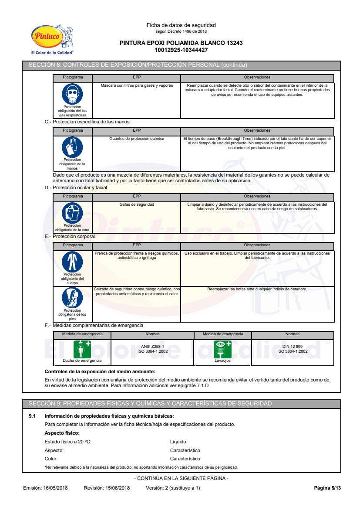
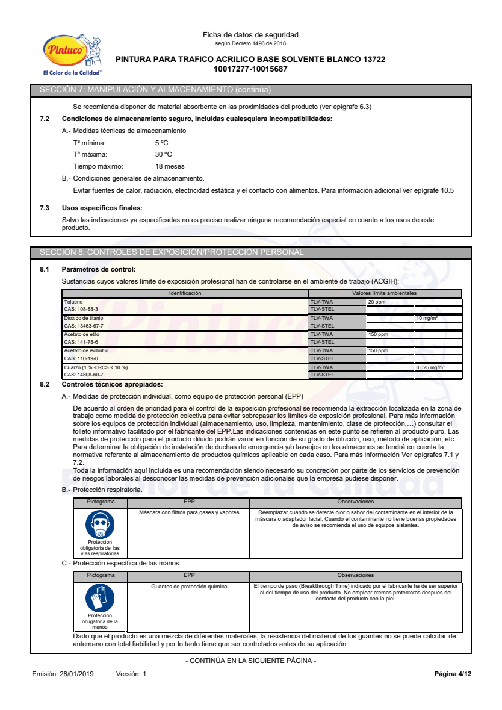
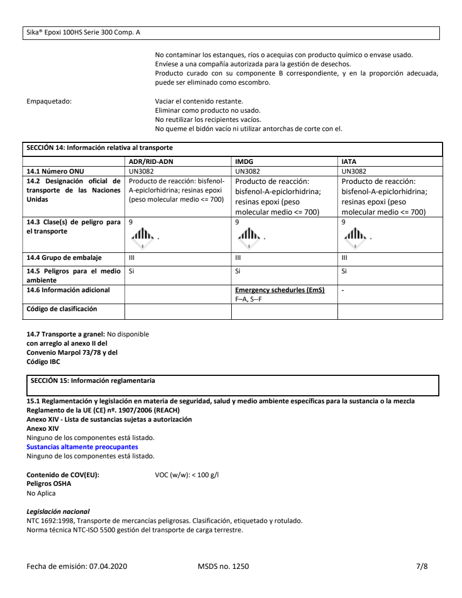
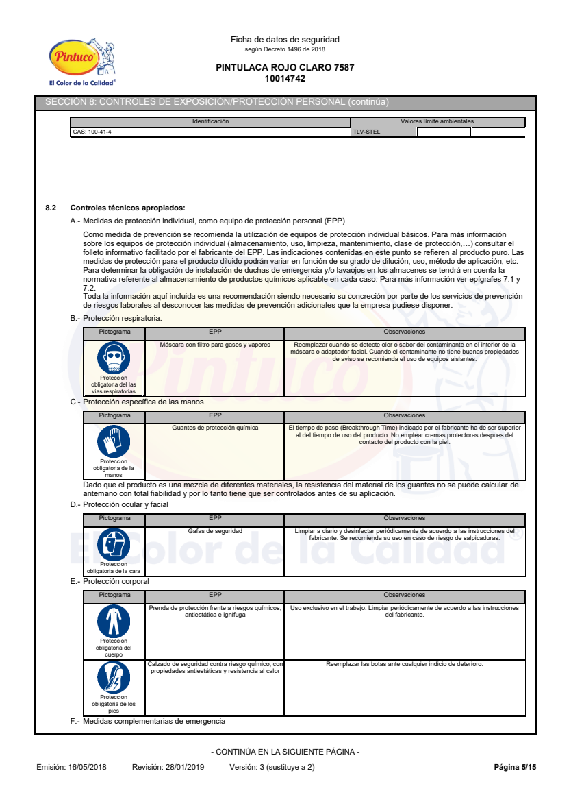
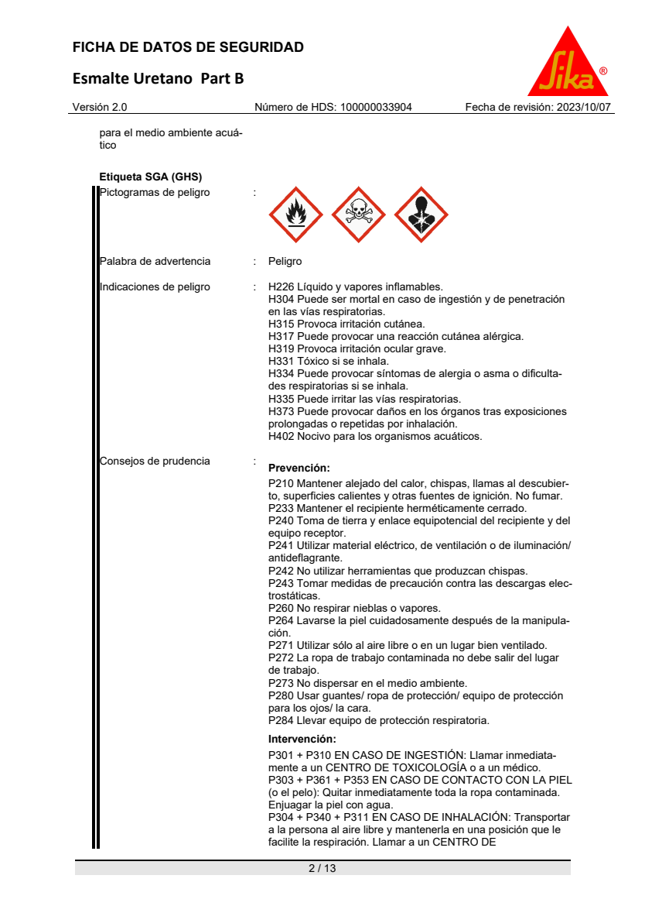
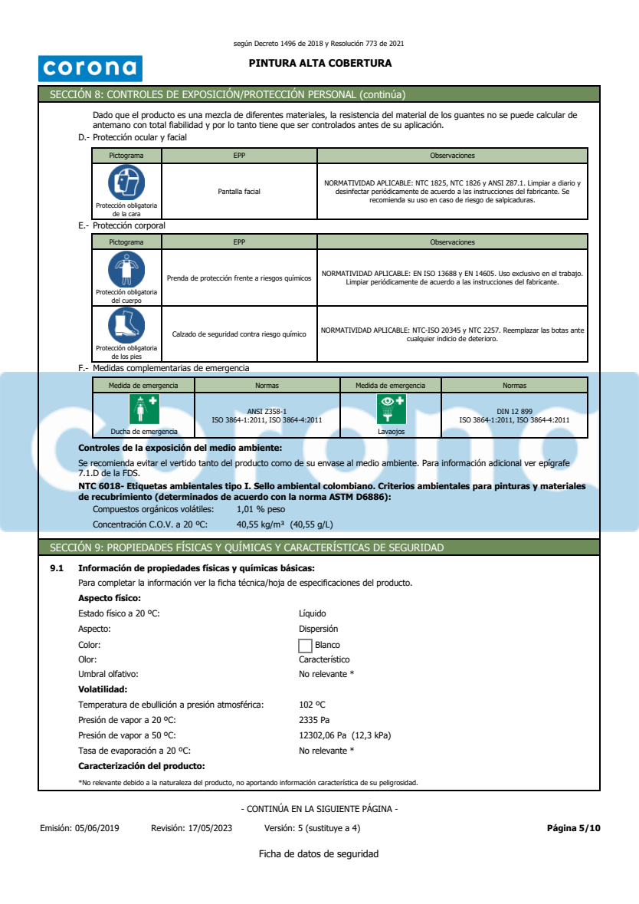

Para cada ficha compara la página del PDF (izquierda) con las tablas en Markdown (derecha): números, unidades y nombres. Marca tu decisión; las casillas empiezan vacías y las decisiones son tuyas.
fds010-pintura-epoxi-poliamida-blanco-13243-10012925-10344427-hoja · FDS 2018 · motivo: hallazgo de la IA
Lo que encontró la revisión asistida por IA: Pág. 5: la tabla de EPP contiene texto basura de OCR («6RTo») procedente de una imagen.
PDF · página 5

Tablas del Markdown en la página 5
Pictograma
EPP
Observaciones
Proteccion obligatoria del las vias respiratorias 6RTo
Máscara con filtros para gases y vapores
Reemplazar cuando se detecte olor o sabor del contaminante en el interior de la máscara o adaptador facial. Cuando el contaminante no tiene buenas propiedades de aviso se recomienda el uso de equipos aislantes.
Pictograma
EPP
Observaciones
Proteccion obligatoria de la manos
Guantes de protección química
El tiempo de paso (Breakthrough Time) indicado por el fabricante ha de ser superior al del tiempo de uso del producto. No emplear cremas protectoras despues del contacto del producto con la piel.
Pictograma
EPP
Observaciones
Proteccion obligatoria de la cara
Gafas de seguridad
Limpiar a diario y desinfectar periódicamente de acuerdo a las instrucciones del fabricante. Se recomienda su uso en caso de riesgo de salpicaduras.
Pictograma
EPP
Observaciones
Proteccion obligatoria del cuerpo Proteccion obligatoria de pies
Prenda de protección frente a riesgos químicos, antiestática e ignífuga
Uso exclusivo en el trabajo. Limpiar periódicamente de acuerdo a las instrucciones del fabricante.
los
Calzado de seguridad contra riesgo químico, con propiedades antiestáticas y resistencia al calor
Reemplazar las botas ante cualquier indicio de deterioro.
fds021-pintura-para-trafico-acrilico-base-solvente-13722-10017277-1 · FDS 2019 · motivo: hallazgo de la IA
Lo que encontró la revisión asistida por IA: Pág. 4: texto basura de OCR («6Bto») en una tabla de EPP.
PDF · página 4

Tablas del Markdown en la página 4
Pictograma
EPP
Observaciones
Proteccion obligatoria del las vias respiratorias 6Bto
Máscara con filtros para gases y vapores
Reemplazar cuando se detecte olor o sabor del contaminante en el interior de la máscara o adaptador facial. Cuando el contaminante no tiene buenas propiedades de aviso se recomienda el uso de equipos aislantes.
Pictograma
EPP
Observaciones
Proteccion obligatoria de la manos
Guantes de protección química
El tiempo de paso (Breakthrough Time) indicado por el fabricante ha de ser superior al del tiempo de uso del producto. No emplear cremas protectoras despues del contacto del producto con la piel.
Tu verificación: Errores encontrados:
FDS 27 - Epoxi_100HS_S300_CA.pdf
fds027-epoxi-100hs-s300-ca · FDS 2020 · motivo: hallazgo de la IA
Lo que encontró la revisión asistida por IA: Pág. 7: texto basura de OCR («Alln») en una tabla.
PDF · página 7

Tablas del Markdown en la página 7
SECCIÓN 14: Información relativa al transporte
SECCIÓN 14: Información relativa al transporte - ADR/RID-ADN
SECCIÓN 14: Información relativa al transporte - IMDG
SECCIÓN 14: Información relativa al transporte - IATA
14.1 Número ONU
UN3082
UN3082
UN3082
14.2 Designación oficial de transporte de las Naciones Unidas
Producto de reacción: bisfenol- A-epiclorhidrina; resinas epoxi (peso molecular medio <= 700)
Producto de reacción: bisfenol-A-epiclorhidrina; resinas epoxi (peso molecular medio <= 700)
Producto de reacción: bisfenol-A-epiclorhidrina; resinas epoxi (peso molecular medio <= 700)
fds031-407141521-recubrimiento-antigraffiti-corona · FDS 2019 · motivo: hallazgo de la IA
Lo que encontró la revisión asistida por IA: PDF parcialmente rasterizado (tablas como imagen, texto por OCR). Pág. 2, tabla de composición: la fila de «Nafta (petróleo), fracción pesada» perdió sus códigos de peligro (en el PDF: Carc. 1B: H350; Muta. 1B: H340; Tox. Agud. 5: H313; Tox. Asp. 1: H304 - Peligro; en el Markdown: «Car. - H : M. : : Mgro»). Verificado visualmente. La tabla de EPP de la pág. 5 se comprobó visualmente y coincide con el PDF.
Reemplazar cuando se detecte olor o sabor del contaminante en el interior de la máscara o adaptador facial. Cuando el contaminante no tiene buenas propiedades de aviso se recomienda el uso de equipos aislantes.
Tu verificación: Errores encontrados:
FDS 34 - PINTULACA ROJO CLARO 7587 - PINTUCO .pdf
fds034-pintulaca-rojo-claro-7587-pintuco · FDS 2019 · motivo: hallazgo de la IA
Lo que encontró la revisión asistida por IA: Pág. 5: texto basura de OCR («6RTo») en una tabla de EPP.
PDF · página 5

Tablas del Markdown en la página 5
Identificación
Valores límite ambientales
CAS: 100-41-4
TLV-STEL
Pictograma
EPP
Observaciones
Proteccion obligatoria del las vias respiratorias 6RTo
Máscara con filtro para gases y vapores
Reemplazar cuando se detecte olor o sabor del contaminante en el interior de la máscara o adaptador facial. Cuando el contaminante no tiene buenas propiedades de aviso se recomienda el uso de equipos aislantes.
Pictograma
EPP
Observaciones
Proteccion obligatoria de la manos
Guantes de protección química
El tiempo de paso (Breakthrough Time) indicado por el fabricante ha de ser superior al del tiempo de uso del producto. No emplear cremas protectoras despues del contacto del producto con la piel.
Pictograma
EPP
Observaciones
Proteccion obligatoria de la cara
Gafas de seguridad
Limpiar a diario y desinfectar periódicamente de acuerdo a las instrucciones del fabricante. Se recomienda su uso en caso de riesgo de salpicaduras.
Pictograma
EPP
Observaciones
Proteccion obligatoria del cuerpo
Prenda de protección frente a riesgos químicos, antiestática e ignífuga
Uso exclusivo en el trabajo. Limpiar periódicamente de acuerdo a las instrucciones del fabricante.
Proteccion obligatoria de los pies
Calzado de seguridad contra riesgo químico, con propiedades antiestáticas y resistencia al calor
Reemplazar las botas ante cualquier indicio de deterioro.
Protección obligatoria de las vías respiratorias ORTO
Máscara autofiltrante para gases y vapores
Reemplazar cuando se detecte olor o sabor del contaminante en el interior de la máscara o adaptador facial. Cuando el contaminante no tiene buenas propiedades de aviso se recomienda el uso de equipos aislantes.
Pictograma
EPP
Observaciones
Protección obligatoria de la manos
Guantes NO desechables de protección química
El tiempo de paso (Breakthrough Time) indicado por el fabricante ha de ser superior al del tiempo de uso del producto. No emplear cremas protectoras después del contacto del producto con la piel.
Pictograma
EPP
Observaciones
Protección obligatoria de la cara
Pantalla facial
Limpiar a diario y desinfectar periódicamente de acuerdo a las instrucciones del fabricante. Se recomienda su uso en caso de riesgo de salpicaduras.
Tu verificación: Errores encontrados:
FDS 60 - PRIMER EPOXICO POLIAMIDA ROJO, Componente A - PINTULAND.pdf
fds060-primer-epoxico-poliamida-rojo-componente-a-pintuland · FDS 2022 · motivo: hallazgo de la IA
Lo que encontró la revisión asistida por IA: Pág. 2: un ícono leído como ideograma (日) en la tabla de composición.
fds070-esmalte-uretano-part-b-sika · FDS 2023 · motivo: hallazgo de la IA
Lo que encontró la revisión asistida por IA: Pág. 2: un ícono leído como ideograma (风) en una celda, con enlaces de imagen dentro de la tabla.
PDF · página 2

Tablas del Markdown en la página 2
Etiqueta SGA (GHS) Pictogramas de peligro
:
风
Palabra de advertencia
:
Peligro
Indicaciones de peligro
:
H226 Líquido y vapores inflamables. H304 Puede ser mortal en caso de ingestión y de penetración en las vías respiratorias. H315 Provoca irritación cutánea. H317 Puede provocar una reacción cutánea alérgica. H319 Provoca irritación ocular grave. H331 Tóxico si se inhala. H334 Puede provocar síntomas de alergia o asma o dificulta- des respiratorias si se inhala. H335 Puede irritar las vías respiratorias. H373 Puede provocar daños en los órganos tras exposiciones prolongadas o repetidas por inhalación. H402 Nocivo para los organismos acuáticos.
Consejos de prudencia
:
Prevención: P210 Mantener alejado del calor, chispas, llamas al descubier- to, superficies calientes y otras fuentes de ignición. No fumar. P233 Mantener el recipiente herméticamente cerrado. P240 Toma de tierra y enlace equipotencial del recipiente y del equipo receptor. P241 Utilizar material eléctrico, de ventilación o de iluminación/ antideflagrante. P242 No utilizar herramientas que produzcan chispas. P243 Tomar medidas de precaución contra las descargas elec- trostáticas. P260 No respirar nieblas o vapores. P264 Lavarse la piel cuidadosamente después de la manipula- ción. P271 Utilizar sólo al aire libre o en un lugar bien ventilado. P272 La ropa de trabajo contaminada no debe salir del lugar de trabajo. P273 No dispersar en el medio ambiente. P280 Usar guantes/ ropa de protección/ equipo de protección para los ojos/ la cara. P284 Llevar equipo de protección respiratoria. Intervención: P301 + P310 EN CASO DE INGESTIÓN: Llamar inmediata- mente a un CENTRO DE TOXICOLOGÍA o a un médico. P303 + P361 + P353 EN CASO DE CONTACTO CON LA PIEL (o el pelo): Quitar inmediatamente toda la ropa contaminada. Enjuagar la piel con agua. P304 + P340 + P311 EN CASO DE INHALACIÓN: Transportar a la persona al aire libre y mantenerla en una posición que le facilite la respiración. Llamar a un CENTRO DE
Tu verificación: Errores encontrados:
FDS 75 -PINTURA-ALTA-COBERTURA - CORONA.pdf
fds075-pintura-alta-cobertura-corona · FDS 2023 · motivo: hallazgo de la IA
Lo que encontró la revisión asistida por IA: Pág. 5: «00» sin correspondencia en el PDF y un ícono leído como ideograma (十) junto a «Lavaojos».
PDF · página 5

Tablas del Markdown en la página 5
Pictograma
EPP
Observaciones
Protección obligatoria de la cara
Pantalla facial
NORMATIVIDAD APLICABLE: NTC 1825, NTC 1826 y ANSI Z87.1. Limpiar a diario y desinfectar periódicamente de acuerdo a las instrucciones del fabricante. Se recomienda su uso en caso de riesgo de salpicaduras.
Pictograma
EPP
Observaciones
Protección obligatoria del cuerpo 00
Prenda de protección frente a riesgos químicos
NORMATIVIDAD APLICABLE: EN ISO 13688 y EN 14605. Uso exclusivo en el trabajo. Limpiar periódicamente de acuerdo a las instrucciones del fabricante.
Protección obligatoria de los pies
Calzado de seguridad contra riesgo químico
NORMATIVIDAD APLICABLE: NTC-ISO 20345 y NTC 2257. Reemplazar las botas ante cualquier indicio de deterioro.
Medida de emergencia
Normas
Medida de emergencia
Normas
Ducha de emergencia
ANSI Z358-1 ISO 3864-1:2011, ISO 3864-4:2011
Lavaojos 十
DIN 12 899 ISO 3864-1:2011, ISO 3864-4:2011
Tu verificación: Errores encontrados:
FDS 76 - PINTURA TOTAL - CORONA.pdf
fds076-pintura-total-corona · FDS 2023 · motivo: hallazgo de la IA
Lo que encontró la revisión asistida por IA: Pág. 2: un ícono leído como ideograma (日) junto a «<5 %».